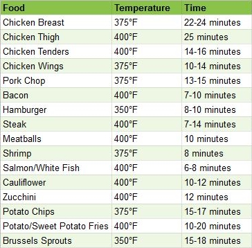

Cooking instructions call for an oven cook time of hours and
minutes, at
°F
°C
General rule of thumb: reduce temperature by 25 degrees (Fahrenheit) and reduce cook time by 20%.
Air Fryer Cook Time Chart
Cooking times will vary; The chart below is for raw, unfrozen food and will vary between air fryer models.
If you don't already, consider measuring your food's temperature with an electronic meat thermometer (affiliate link)!
